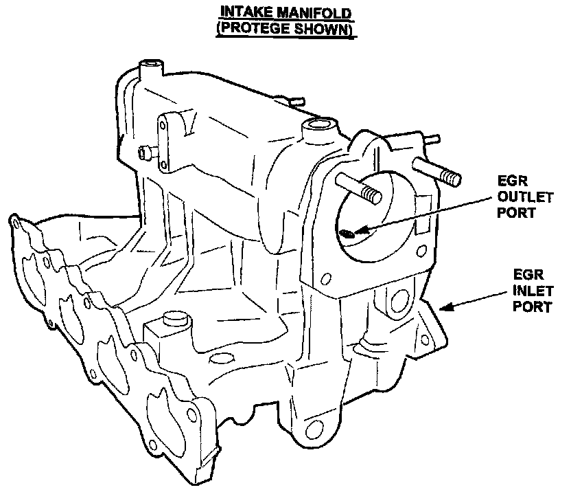
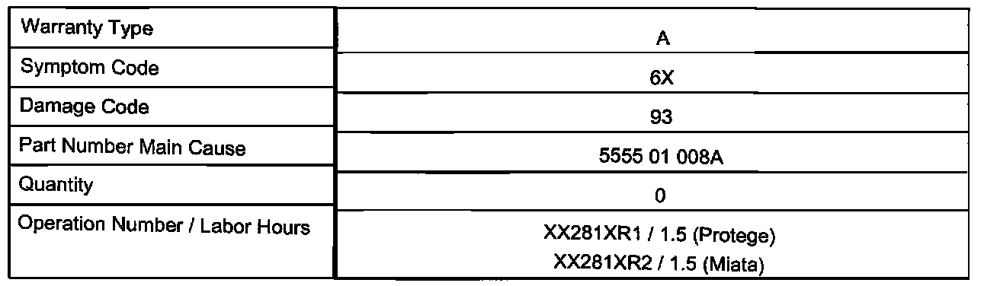

Emissions - MIL ON/DTC P0402 (EGR) Set
Bulletin No: 01-007/02Last Issued: 2/25/2002
Subject:
MIL ILLUMINATES WITH DTC P0402 STORED IN MEMORY
BULLETIN NOTE
This bulletin supersedes 01-012/01 issued 6/28/2001. The SRT (Suggested Repair Times) have been revised.
APPLICABLE MODEL(S)/VINs
All 1999-2001 Protege (1.6L)
All 1999-2000 Miata
DESCRIPTION
The Malfunction Indicator Lamp (MIL) may illuminate with Diagnostic Trouble Code (DTC) P0402 stored in memory. This may be caused by carbon deposits accumulating at the Exhaust Gas Recirculation (EGR) exhaust outlet port, inside the intake manifold. This may cause pressure to increase inside the exhaust gas flow circuit, resulting in stored DTC P0402.
Customers having this concern should have their vehicle repaired using the following procedure.
REPAIR PROCEDURE
1. Verify customer concern.
2. Confirm Freeze Frame Data was set for DTC P0402.
3. Remove Throttle Body according to Workshop Manual section 01-13.
4. Remove EGR valve (for Protege), or Surge tank (for Miata) according to the applicable Workshop Manual.
5. Using appropriate tool, remove carbon from EGR outlet port.
Caution:
On Protege, DO NOT allow scraped-off carbon to fall into surge tank. Only allow carbon to exit through EGR port.

6. With compressed air, blow loosened carbon through EGR inlet port.
Warning:
Wear eye protection (safety goggles) when removing carbon with compressed air.
7. Reassemble components in reverse order.
8. Verify repair.

WARRANTY INFORMATION
Note:
This information applies to verified customer complaints on vehicles covered under normal warranty. Refer to the SRT microfiche for warranty term information.

DISCLAIMER